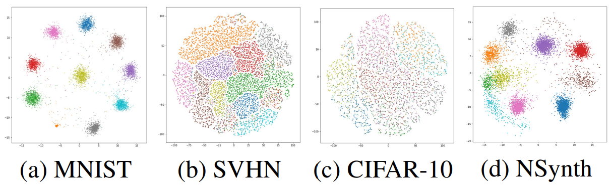

|
I am a PhD student in Interdisciplinary program in Neuroscience at Seoul National University, and a member of the biointelligence laboratory led by Byoung-Tak Zhang. My research interests lie in the area of robotics, vision, imitation learning and representation learning. Email / CV / Google Scholar / Github |

|
ICRA 2023 (acceptance ratio: 1345/3125~43%) [pdf] [code]

Dong-Sig Han, Hyunseo Kim, Hyundo Lee, Je-Hwan Ryu, Byoung-Tak Zhang
NeurIPS 2022 (acceptance ratio: 2671/10411~25.66%) [pdf] [code]
|
|

|
Taehyeong Kim, Injune Hwang, Hyundo Lee, Hyunseo Kim, Won-Seok Choi, Joseph J Lim, Byoung-Tak Zhang ICML, 2021 official paper / arXiv MPART suggests successful active online learning that selects representative queries and proceeds efficient model update that does not forget important info as soon as a new data sample is observed. |
|

|
Taehyeong Kim, Injune Hwang, Gi-Cheon Kang, Won-Seok Choi, Hyunseo Kim, Byoung-Tak Zhang ICASSP, 2020 Official paper / arXiv LPART suggests semi-supervised online learning for real-world problems where labels are rarely given and the opportunity to access the same data is limited. |

|
Dong-Yoon Kim, Gyuryang Heo, Minyoo Kim, Hyunseo Kim, Ju Ae Jin, Hyun-Kyung Kim, Sieun Jung, Myungmo An, Benjamin H Ahn, Jong Hwi Park, Han-Eol Park, Myungsun Lee, Jung Weon Lee, Gary J Schwartz, Sung-Yon Kim Nature, 2020 official paper We revealed a neural circuit that relay mechanosensory feedback from the digestive tract to the brain. Neurons in parabrachial nucleus that express the prodynorphin gene monitor the intake of both fluids and solids. |
Domestic Conference
Refined Object Tracking deducing Exit and Entrance signal with Large Multimodal ModelHyunseo Kim and Byoung-Tak Zhang
Proc. Korea Computer Congress 2024 (KCC 2024)
Bottleneck-Aware Linear Augmentation for Robotic Imitation Learning
Minji Kim, Ganghun Lee, Hyunseo Kim, Minsu Lee and Byoung-Tak Zhang
Proc. Korea Computer Congress 2024 (KCC 2024)
Self-Playing Reinforcement Learning Framework for Starcraft 2 Mini-Game
Moonhoen Lee, Hyunseo Kim, Minji Kim, Juno Kim, Hye Jung Yoon and Byoung-Tak Zhang
Proc. Korea Software Congress 2023 (KSC 2023)
Future State Generation for Action Prediction in Cross Domain
Hyunseo Kim, Yu-Jung Heo, Kibeom Kim and Byoung-Tak Zhang
Proc. Korea Computer Congress 2021 (KCC 2021)
Predicting health indicator using Vector autoregression
Hyunseo Kim, Won Seok Choi and Byoung-Tak Zhang
Proc. Korea Software Congress 2019 (KSC 2019)
Last update: September 2025 by Hyunseo Kim